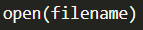

Please feel free to watch the videos as follows:
As the videos show, a file can be opened in Python with the following syntax:
It's important to close the file after you are finished. A best practice in Python is to used the "with" syntax so that it will automatically close the file for you when your program leaves that block of code:
if the file you were reading from was called "colors.txt" and you wanted it to be saved into a variable "color_file", you would use the following:
There are several ways to read data from files in Python. One of the most straightforward approaches is to use a "for" loop to iterate over each line, the same way you would if you were iterating through the items in a list.
Once the file has been opened, you can iterate through each line as follows:
Once you have loaded the data from a line in the file into a variable, you may need to clean up that line or break it up into individual pieces to use separately.
One common thing to do is to remove any extra space at the beginnign or end of a string. This "space" can be in the form of regular spaces, tab characters, or newline characters (\n). In Python, there is built-in function named ".strip()" that strips these characters off of the string as shown below:
Please note that the ".strip()" function, does not change the original string variable, but instead it generates and returns a new one that you can save into a variable.
Another common task with strings is to want to separate them into individual pieces. Python contains a built-in function ".split()" that can split a string up based on whatever character you define that separates the pieces.
For Example, if you wanted to split up a string using a space as the separator so that each word would be a separate variable, you could use the following:
If you have another character that separates the pieces of your strings, such as a comma, you could split on that using the code ".split()".